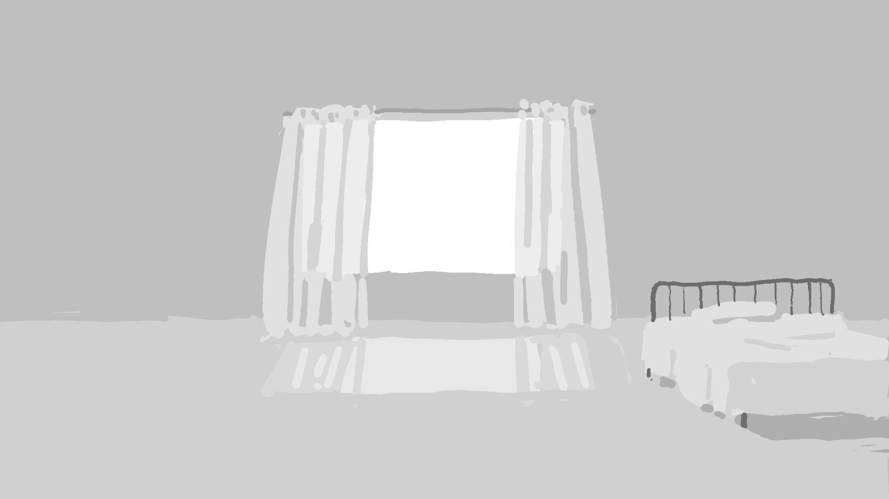

我过的是一种充满耻辱的生活。

维庸之妻
- 这句话的回音中充满了一种使我毛骨悚然的憎恨。
- 丈夫趁机像一只大乌鸦似的甩动和服外褂的双袖，朝门外飞奔而去了。
- 映入他们眼帘的是房间里那一片荒凉的景象：已经开始腐烂的榻榻米，破旧不堪的纸糊拉窗，剥落的墙壁，糊纸早已破损而露出了木框骨架的隔扇，堆放在犄角的桌子和书箱，而且那书箱分明是空空如也。
- “有这么好的一个夫人，大谷先生干嘛还那样呢？”
“纯属是有病，有病啊。从前还不是那个样子，到后来就越变越坏了。”说着，那男人又长长地叹息了一声。 - “话说起来很轻松，没准您会认为我们属于那种没有受多少苦、运气还并不差的幸运儿，可是，人的一生就如同一座地狱呀。所谓‘寸善尺魔’，真是一点不假。如果得到了一寸的幸福，必然会有一尺的魔物伴随其后。人的一年有三百六十五个日子。倘若有哪一天或半天属于无忧无虑的日子，那就真算得上是幸运之人了。”
- “那时候我们店的大门每天都是一直关闭着的，按当时流行的术语来说，就叫做‘闭门营业’。只有极少数的老主顾从厨房门悄悄进来，而且，没有人在店堂土间的座位上喝酒，而是在里面的六铺席房间里把电灯开得暗暗的，压低嗓音说话，静悄悄地喝个酩酊大醉。”
- “尽管如此，不知为什么，那位先生对于我来说也还是不好对付的，虽说我早就打定了主意，无论他下一次怎么央求我，都绝对不给他酒喝了，可一看到他如同一个遭到追撵的人一般在意想不到的时刻里蓦然出现，走进我们店里后终于舒了口气的样子，我下定的决心也不由自主地动摇了，最终又给他端出了酒来。”
- “说来他自己也并没有吹嘘过自己的门第出身，也从没有愚蠢地自诩为天才什么的，一旦阿秋等人在他旁边大肆谈论起他的非凡之处，他就会嘀咕着什么‘我想要钱’、‘我要把这里的欠账全部付清’等等，总之，扯上一些风马牛不相及的事情，使在座的人大为扫兴。”
- “那些记者说，从今以后军人就要没落了，而曾经一直贫穷寒碜的诗人则将受到世人的追捧等等。大谷先生当着那些记者的面，尽讲一些外国人的名字，什么英语呀、哲学呀，反正是一些不知所云的奇怪东西。然后他冷不防站起身走出店门，一去而不复返。”
- 他一出家门，就常常是连着三四个晚上不回家，不，有时甚至连续一个月也不回家，而我也不知道他在哪里和干些什么。他回来时总是醉成了一滩烂泥，脸色苍白，“呼哧呼哧”地喘着粗气一言不发地凝视着我的脸，眼泪扑簌簌地流了下来。他有时会冷不防钻进我躺着的被窝里，紧紧地搂抱着我的身体，颤抖着说道：
“啊，不行不行，好害怕，我好害怕呀。真恐怖啊！快救救我！”
即使是在睡着了之后，他也是忽而梦话连篇，忽而长吁短叹。而第二天早晨，他就像个灵魂出了窍的人一样傻愣着，可不一会儿便又踪影全无了。这一去又是连着三四个晚上都不回家。 - 无论在池边的长凳上待多久，事情也是不会凭空了断的。
- “别谦虚嘛！从今以后呀，在日本，不管是马还是狗，都是男女平等呐。”
- 但这样下去，事情又会怎么样呢？我的内心一片茫然。我只是笑着，应付着客人们猥亵的玩笑，自己也回敬一两句，
人间失格
序言
不过有一点让人觉得蹊跷，这张照片上的他竟然没有一点那种活生生的人的感觉。
然而，这一次的笑容，不再是那种皱巴巴的猴子的笑，而是变成了颇为巧妙的微笑，但不知为何，总与人的笑容大相径庭，缺乏那种可以称之为鲜血的凝重或是生命的滞涩之类的充实感。那笑容不像鸟，而像羽毛一般轻飘飘的，他就那么笑着，恰似一张白纸，总之，让人觉得那是一种彻头彻尾的人工制品。
他就那么坐着，把双手伸向火盆，俨然已经自然而然地死去了一般。
手记之一
我过的是一种充满耻辱的生活。
对于我来说，所谓人的生活是难以捉摸的。
总之，也就意味着，我对于人类的营生仍然是迷惑不解。自己的幸福观与世上所有人的幸福观风马牛不相及，这使我深感不安，并因为这种不安而每夜辗转难眠，呻吟不止，乃至精神发狂。我究竟是不是幸福呢？说实话，尽管我打幼小时起，就常常被人们称之为幸福的人，可是，我自己却总是陷入一种置身于地狱的心境中，反倒认为那些说我是一个幸福者的人比我快乐得多，我和他们是无法相提并论的。
我甚至认为，自己背负着十大灾难，即使将其中的任何一个交给别人来承受，也会将他置于死地的。
他们使自己成为一个彻底的利己主义者，并虔信那一切属于理所当然的事情，曾几何时怀疑过自己呢？这样一来，不是很轻松惬意吗？然而，所谓的人不是全都如此，并引以满足吗？
我确实弄不明白……或许夜里酣然入睡，早晨就会神清气爽吧？他们在夜里都梦见了什么呢？他们一边款款而行，一边思考着什么呢？
我与别人几乎无从交谈。该说些什么，该怎么说，我都不知道。
这是我对人类最后的求爱。尽管我对人类满腹恐惧，但却怎么也没法对人类死心。
一旦别人说我坏话，我就觉得像是自己误解了别人的意思一样，只能默默地承受那种攻击，可内心却感到一种近于狂乱的恐惧。
我一直对人类畏葸不已，并因这种畏葸而战栗，对作为人类一员的自我的言行也没有自信，因此只好将独自一人的懊恼深藏在胸中的小盒子里，将精神上的忧郁和过敏密闭起来，伪装成天真无邪的乐天外表，使自己一步一步地彻底变成了一个滑稽逗笑的畸形人。
一旦别人问起自己想要什么，那一刹那间里反倒什么都不想要了。怎么样都行，反正不可能有什么让我快乐的东西——这种想法陡然掠过我的脑海。
相互欺骗，却又令人惊奇地不受到任何伤害，甚至于就好像没有察觉到彼此在欺骗似的，这种不加掩饰从而显得清冽、豁达的互不信任的例子，在人类生活中比比皆是。
手记之二
- 这是我生平第一次远走他乡，但在我眼里，陌生的他乡，比起自己出生的故乡，是一个更让我心旷神怡的环境。